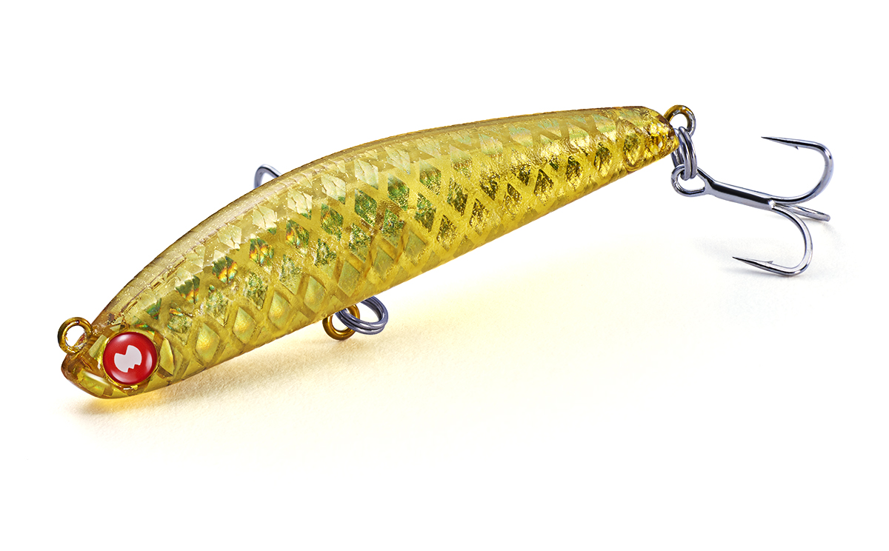
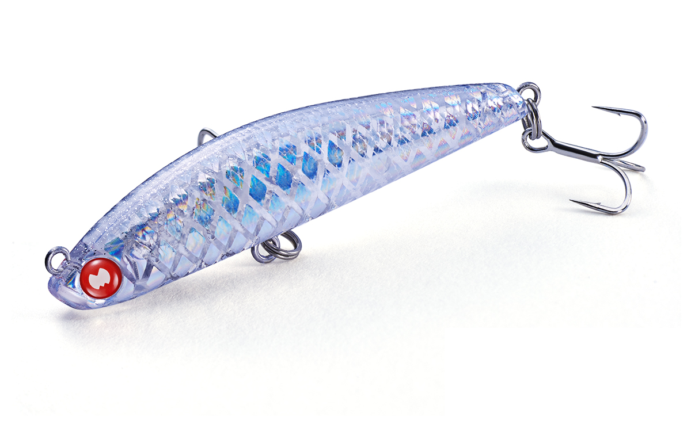
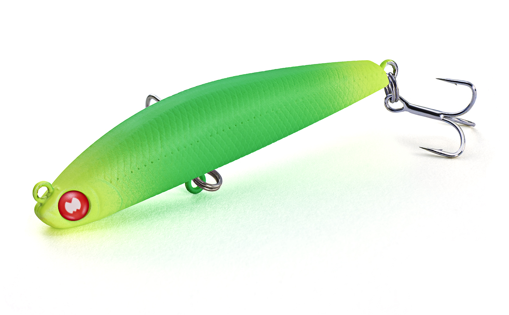
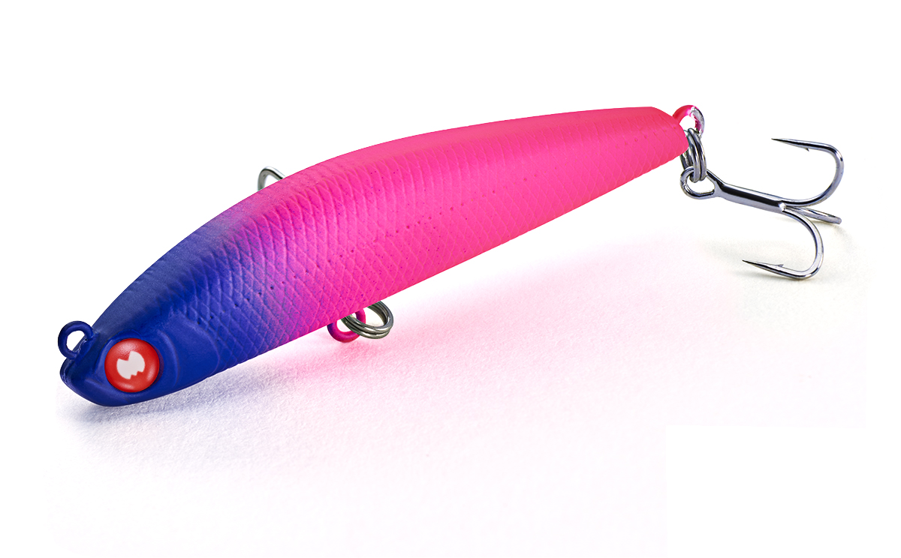

アスリート55LL ロングキャスト
（Athlete 55LL Long Cast）
アスリート55LL ロングキャストは、ジャクソンのライトゲームシリーズ「Mixture（ミクスチャー）」のプラグです。
アスリート55LLメバルチューンのボディに6gのウエイトを積み、ライトゲームプラグの中でも最高クラスの飛距離を出せるのが最大の特徴。これまで届かなかった沖のブレイクやシモリを狙えるスーパーシンキングです。

画像出典:Jackson公式HP
スペック
- メーカー
- Jackson（ジャクソン）
- シリーズ
- Mixture（ミクスチャー）
- 全長
- 55mm
- 自重
- 6g
- タイプ
- スーパーシンキング
- レンジ
- 20〜80cm（巻く速さで調整）
- フック
- #12
- カラー
- 全6色
- ターゲット
- メバル・シーバスなど
- 価格
- 1,760円（税込）
▼今すぐチェック

アスリート55LL ロングキャストの特徴
飛距離で広がる、ライトゲームの可能性
-
ライトゲームプラグ最高クラスの飛距離
アスリート55LLメバルチューンのボディに6gのウエイトを搭載。これまで飛距離が足りずにあきらめていた沖のブレイクラインやシモリなど、好ポイントまで届く。
-
巻く速さで変わる緩いS字
アクションは緩いS字系で、巻く速さを上げると細かなピッチに変化する。巻くスピードによって、20〜80cmのレンジを引き分けられる。
-
ライトシーバスタックルでも投げやすい6g
6gのヘビーウエイトは、ライトゲームタックルだけでなく、ライトシーバスタックルでも気持ちよく投げられる。マイクロベイトに付いたシーバスなど、いろいろな魚を狙える。
アスリート55LL ロングキャストの使い方
キャストしたら、ゆっくり巻いて緩いS字で泳がせるのが基本です。
浅いレンジを引きたい時はゆっくり、少し下のレンジを探りたい時は着水後にカウントを取ってから巻き始めます。反応がなければ巻く速さを上げて、細かいピッチの泳ぎに変えて誘いましょう。
アスリート55LL ロングキャストの得意な状況
岸から届かなかった沖のブレイクやシモリまわりで、メバルを狙う場面で出番です。
ワームやほかのプラグでは届かない距離を探れるのが強みで、マイクロベイトを食べているシーバスにもよく釣れます。風がある日でも、6gの重さで飛距離を落としにくいのも心強いポイントです。
ワンポイント
飛距離が出るぶん、沖のポイントでは着水からルアーが届くまでのレンジが深くなりがちです。着水後にカウントを取り、狙うレンジに合わせて巻き始めのタイミングを変えると、沖のブレイクの上をしっかり通せます。
人気カラー
アスリート55LL ロングキャストの人気カラーを紹介します。

アカツキケイムラ仕様。朝夕のマズメや、少し濁った日に。

ホロノハナケイムラ仕様。ホロのフラッシングで小魚らしく見せたい時に。

マットグリーンアップルグロー仕様。夜や濁りでシルエットを出したい時に。

パープルヘッズグロー仕様。夜のメバリングで目立たせたい時に。
画像出典:Jackson公式HP
▼今すぐチェック
アスリート55LL ロングキャストに似ているルアー
-
 シラスミノー48リップレス
スミス
詳細はこちら＞
シラスミノー48リップレス
スミス
詳細はこちら＞
48mmのリップレスミノー。シラスなど、さらに小さなベイトに合わせたい時に。
-
 ブローウィン50S
ブルーブルー
詳細はこちら＞
ブローウィン50S
ブルーブルー
詳細はこちら＞
飛距離の出る小型シンキングミノー。表層の反応を見たい時に。
-
 ラプター50SS
レガーレ
詳細はこちら＞
ラプター50SS
レガーレ
詳細はこちら＞
小型のスローシンキングミノー。表層をゆっくり見せたい時に。